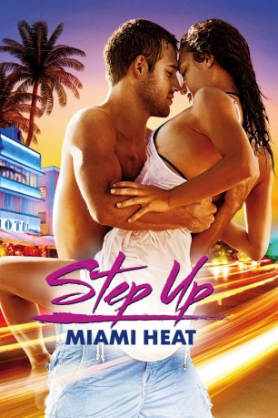

gesehen am 07.08.2015
gesehen am 07.08.2015Alternativ: Step Up Revolution gesehen am 07.08.2015
 
 IMDB-Wertung: 6.5 / 10
IMDB-Wertung: 6.5 / 10  Metascore:
Metascore: 
Step Up - Miami Heat handelt von Emily, die mit dem Traum nach Miami kommt, als professionelle Tänzerin arbeiten zu können. Emily verliebt sich in Sean, der Leiter der Tanzgruppe MOB, mit der er Flashmobs organisiert. Als Emilys Vater, ein reicher Geschäftsmann, plant ein Nachbarviertel abzureißen, muss sie sich mit Sean und MOB verbünden, um dies mit Protestflashmobs zu verhindern. Emily setzt damit auch den Traum ihrer Karriere aufs Spiel.
Jahr: 2012
Dauer: 99 Minuten
FSK: 6
Land: USA Studio: Summit EntertainmentTonspuren: DTS - ,
Untertitel:
Auflösung: 1080p (1920x800) Größe: 6369 MB
Regisseur: Scott Speer
Drehbuch: Amanda Brody, Duane Adler
Soundtrack: Aaron Zigman
Darsteller:
 Stephen Boss als Jason
Stephen Boss als Jason Marc Macaulay als Uniformed Cop
Marc Macaulay als Uniformed Cop Megan Boone als Claire
Megan Boone als Claire Peter Gallagher als Mr. Anderson
Peter Gallagher als Mr. Anderson Adam G. Sevani als Moose
Adam G. Sevani als Moose Marc Inniss als Mob Dancer
Marc Inniss als Mob Dancer Pearce Blair als Mr. Anderson's Assistant , uncredited
Pearce Blair als Mr. Anderson's Assistant , uncredited Anthony Correa als Cigar Roller , uncredited
Anthony Correa als Cigar Roller , uncredited Christopher De Stefano als South Beach Dancer / Party Guest , uncredited
Christopher De Stefano als South Beach Dancer / Party Guest , uncredited Caleb Emery als Business Man , uncredited
Caleb Emery als Business Man , uncredited John Archer Lundgren als Neighborhood Dancer , uncredited
John Archer Lundgren als Neighborhood Dancer , uncreditedDatei: X:\5-Pentalogie(A-Z)\Step Up\Step Up 4 - Miami Heat (2012, FSK6, 1920x800).mkv seit 03.08.2015
Festplatte: HD Collection-3(N-Z)-6(A-Z)
 Es gibt insgesamt 9 Filme in der Gruppe '5-Pentalogie(A-Z)\Step Up'
Es gibt insgesamt 9 Filme in der Gruppe '5-Pentalogie(A-Z)\Step Up'